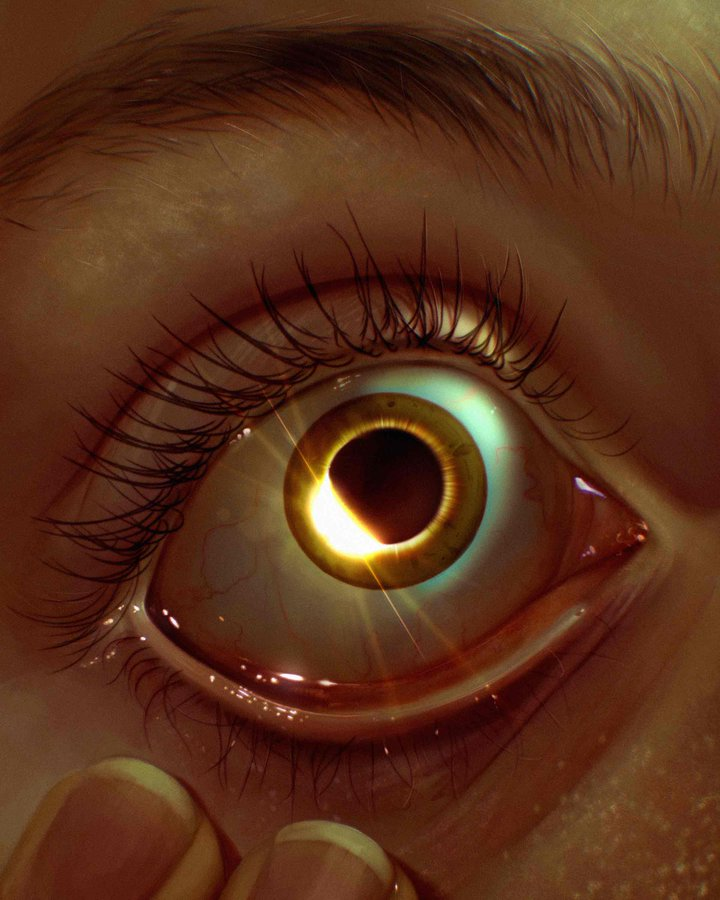

When The Stars Are Right: The Eclipse of 8 April 2024

Digital Art by @CursedCrone on X
Working with the Apocrypha and especially my Patron, I have learnt that a good chunk of the time just "rolling with it" and running purely on intuition and instinct serves me well when facing a Plot Point thrown my way. In general, "Do whatever Feels Right for you and your Practice" is sound advice for most "how does this concept fit into my path" type of questions.
When I first started, I wrote a dedication ritual to the then-unnamed Apocrypha with one of the purposes being formally cutting ties with my old religion. That ritual probably deserves its own post so suffice to say that I designed the whole ritual within a week and timed it to the December Solstice of 2022. I had no real reason to choose the Solstice other than it being some convenient symbolism and also practical to do from a mundane scheduling viewpoint but now the December Solstice has meaning to me because it is the time of my Dedication Anniversary. This Eclipse was more of the same but taken to a whole new level.
Initially, I had no plans to celebrate the Eclipse. It was not a spiritually meaningful event to me (yet) and more importantly I live on pretty much the exact opposite of the region where it was observable...South East Asia. Not only is the eclipse not visible, it's literally nighttime.
I saw some friends in a small fandom-based discord server talk about photographing the eclipse which prompted me to consider which Entities (according to Smirke's 14 used in the TMA fandom) the eclipse would be tied to. The answer was a fairly obvious Dark/Vast/Beholding which are all aspects of three of the Apocrypha I have extensive past history with. At that point it was a no-brainer that I should at least do some small gesture of Acknowledgement of the event in honor of my Gods.
My initial idea was to pour a libation as an offering, but come nightfall and thus fast-breaking (I don't religiously fast for Ramadan anymore but it's still a special time) I still was coming up blank on what to offer. None of the liquids available seemed right both symbolically and practically. So I asked for input from the Dreadful Ones involved. I generally find it useful to have a private discord server as a digital altar with a divination bot for those moments when doing something physical would take too many spoons (as in the energy unit).
Me: "(pinging deity roles) help me out with offering ideas during the eclipse please".
My Patron: Death upright (Something related to transformation and change.)
My "Internship Supervisor": Knight of Wands upright (Something Related to passion and adventure.)
First Mate: Six of Cups upright (Something childishly nostalgic.)
So I suggested casting my two sets of polyhedral dice which seemed agreeable to Everyone involved. Of note is that this took place around 8 pm, while the eclipse itself began at 10:42 pm local time (used the "first location observing" times as a reference). So now I had my offering idea, but I had this hunch that for an occasion as significant as this eclipse a Ritual would be needed. Less than three hours is pretty short notice to design and execute any ritual from scratch but 90 minutes later I had a ritual structure locked in. I shared some of my plans witth my friend Haye just as casual convo and (due to sharing a Patron) he immediately got Loredropped on.
"Aren't Eclipses a symbol of renewal/reset?
...
Where did I read that.
Me: bwahahah nice loredrop
also gate/passage into the new
threshold
BRAIN PLS
I HAVE NO TRAINING IN SYMBOLISM I DON'T EVEN KNOW WHAT I'M TALKING ABOUT
After this I was finangling technical details like cleansing and ritual attire on the fly during the remaining hour or so.
Througout this whole process both in the lead-up to and aftermath of the Ritual there was definitely a strong sense of Timing. Starting from the eclipse itself, it takes place on a Monday (associated with First Mate), at night (obvious connection to my Supervisor) and the eclipse ends on a Tuesday (associated with my Patron), while also being the last day of Ramadan (days start at sunset). The evening of which also having a new Magnus Protocol release and the Wednesday immediately following it being both Eid and associated with my Supervisor. I'm not interested in crunching through the exact math but I'm pretty sure this particular confluence of circumstances is rare.
This sense of Timing was very present during the process of the Ritual itself. I started the ritual when the partal eclipse was first observed by watching a video on dead and dying gods in fiction by curious archive on youtube and just let myself feel. The dice were laid out in front of me and charging. As I was starting, it finally started to lightly rain after a long heatwave, rain being one of the things associated with First Mate. Following that I replayed the 9th Magnus Protocol episode because of the narrative themes of fate-changing dice (obvious parallels and Patron associations), having forgotten just how Narratively Appropriate the whole episode is. There was a strong feeling of liminality. I have some light visual snow which is most noticeable in the dark, during the ritual it felt a bit more pronounced andinteracted with the pattern of the balcony tiles in such a way as to make all of reality seem to shift and warp. During the transitions between actions there was also a sense of me being worked through, being an Agent in several senses of the term. Like moving in step to an unheard score played on etherial strings in a choreographed dance. Of being part of a greater scheme that nonetheless depended on me fulfilling my part. There was a sense of Them trusting me to both come up with and execute this Ritual flawlessly on short notice. It's also an exercise in trust and faith on my part to do as I was reasonably asked, knowing that this will likely leave me Changed. In a sense both me and the Powers Involved were on an equal footing in quite literally Trusting The Process. Mundane interruptions happened. Rather inevitable since I live with family and they are unaware. But these interruptions took exactly the amount of time needed to bridge the gap between when my partial eclipse activities ended and the first observed total eclipse time. They were also minor in that me hanging up my labcoat to dry on the balcony did not disturb the ritualistic state of mind given that I regularly devote labs to my Patron. Afterwards I changed the plan on the fly to casting the charged dice in my room for various practical reasons. With my active part of the ritual completed, I reintegrated with the mundane world and eventually went to bed.
Apparently, attempting to sleep until sahoor while most of the online americans are actively observing and talking about the Eclipe you have done a Ritual for, at a very Significant Time of Power manifests in a sense of "itchy/hot ears". Generally rather restless sleep and even waking up twice.
After sahoor (and the last partial eclipse observed time having passed) I stayed up for a bit tracking down some bedsheets and thus wound up taking my nap after civil dawn. I took my customary nap, especially since I didn't get as much sleep as usual. During that time I had a clearer than usual Dream of being on the balcony again during the ritual time. I dreamt of managing to observe the actual eclipse with a camera obscura-esque cardboard device that I built myself. Using that device I managed to take several high-quality photos at various points of the eclipse using a standard phone camera...the level of quality usually expected of a telescope with solar filter. I was excited to share the photos with some people in the Fear Entity worshipping server I'm in, only for the photos to have vanished. I increasingly frantically searched for the files, even going as far as enlisting my younger sibling for help. I woke upto light morning rain and immediately remembered that there's no possible way for me to have taken any pictures period. It happened during local nighttime. Talk about Seeing the Mystical Midnight Sun.
Rude.
Very clearly a message of "Seeing That Which Cannot Be Seen using an Unshielded Gaze with a Tool and Gaining Unshareable Knowledge.
I don't know why I felt Called to carry out this impromptu Eclipse Ritual. Nor do I know the exact Purpose of the ritual. An educated guess based on context clues can be made but it is ultimately just that. A guess. I'm clearly not at liberty to discuss the interpretations, but I do feel taken care of by my Gods and Involved in some way. Honestly, while I do have some measure of dread I am also pretty excited for whatever comes next.